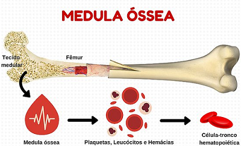
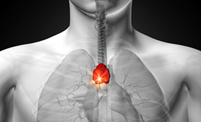

O sistema imunológico é composto por dois grupos de órgãos, os órgãos imunitários primários e os secundários. Os primários são assim chamados pois são os principais locais onde os linfócitos se formam e amadurecem. Existem dois órgãos primários:
Medula óssea
além de produzir células sanguíneas e plaquetas, a medula produz linfócitos B e linfócitos matadores.
Timo
é responsável pela produção dos linfócitos T maduros.
 
Secundários
Os órgãos secundários são aqueles que atuam no sistema imunológico após a produção e amadurecimento dos linfócitos. Veja quais são os cinco órgãos que fazem parte desse grupo:
Linfonodos
além de produzir células sanguíneas e plaquetas, a medula produz linfócitos B e linfócitos matadores.
Tonsilas
é responsável pela produção dos linfócitos T maduros.
Baço
além de produzir células sanguíneas e plaquetas, a medula produz linfócitos B e linfócitos matadores.
Adenoides
é responsável pela produção dos linfócitos T maduros.
Apêndice cecal
além de produzir células sanguíneas e plaquetas, a medula produz linfócitos B e linfócitos matadores.